Nocturne of the Forest is a game that was made in Unity for the Pirate Software Game Jam 15, meaning it was made in just two weeks. I worked alongside my teammate Davin Lewis. The theme we worked with was "Shadows and Alchemy".
The game is heavily inspired by Moonligher on Steam. In our game, you stumble across a magic cloak while dangerously wandering outside your village. When you put on the cloak, it gives you the ability to see in the dark. The poor soul who left the cloak also left a book, which grants you access to his shop in the village.
The abilities the cloak grants you allows you to travel out into the forest at night and fight monsters. Doing this allows you to gather materials that the villagers of the town do not have access to. With these materials, you can craft rare potions and sell them in the shop to the villagers.
The game combines a typical RPG with a shop-running simulation style of game. It was a very ambitious project for us, and it shows in the final product. There are several bugs that we did not have time to fix before the deadline, and the gameplay itself also suffers a bit. We wanted to do a lot with this project, and even though it did not come out perfect, we are still proud of where we got with it. I myself put over 100 hours in those two weeks working on this game.
The game has an ending to work towards, and there is also a fair amount of progression to go along with it. There are several note pages scattered in the forest you can collect and read at the shop to learn more about the lore of the game. There are many potions that the player can craft, but the recipes have to be obtained by killing specific enemies. There is also an upgrade system, where you can put money into the player's stats to better yourself for fighting in the forest. There is even an upgraded shop you can buy.
You can play the game on itch.io here: https://nurd.itch.io/nocturne-of-the-forest.
Ben Bonus
Games
Nocturne of the Forest
Macabre Manor
Bullet Blitz
TETRIS
Apps
Piebot
Websites
Portfolio
Knockout City Item Catalog
Other
Minecraft Slower Progression Plugin
Unfinished
Pixel Simulation
Minecraft Skin Editor
Games
Nocturne of the Forest
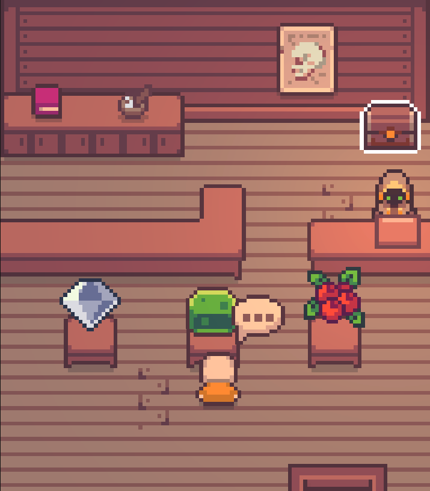
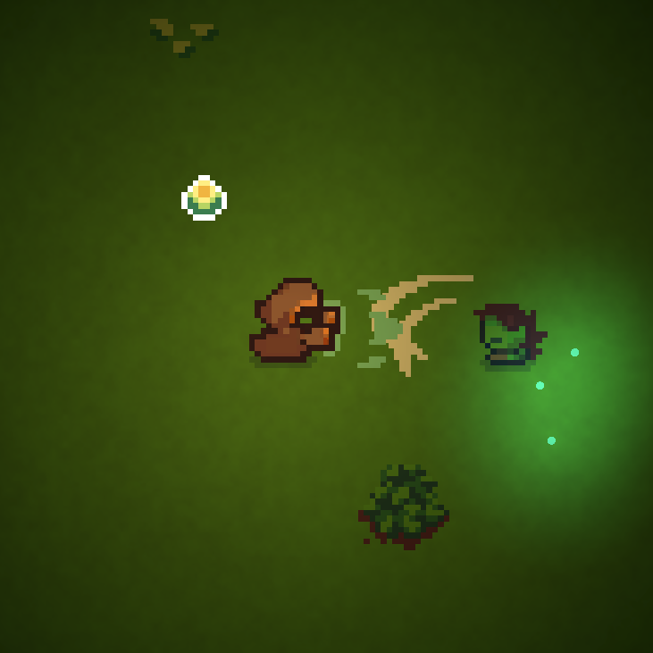
Macabre Manor
Macabre Manor is a game that was made in Unity, for the Brackeys Game Jam 2024.1, and it was made in just one week. I worked alongside my teammate Davin Lewis. The theme we worked with was "What's Behind the Door?".
For the two of us, it was our first attempt at both a 3D game and a horror game. The theme was fairly vague, so we ended up with the idea of an escape room, and we had always wanted to do something horror based so we combined the ideas.
You start off in a strange room with only a single door. Your goal is always to open the door at the end of the room, solving puzzles along the way.
The finished product came together really well. According to the feedback, the puzzles can be a little confusing, however I am very proud of what we accomplished considering we only had a week.
You can play the game on itch.io here: https://nurd.itch.io/macabre-manor.
For the two of us, it was our first attempt at both a 3D game and a horror game. The theme was fairly vague, so we ended up with the idea of an escape room, and we had always wanted to do something horror based so we combined the ideas.
You start off in a strange room with only a single door. Your goal is always to open the door at the end of the room, solving puzzles along the way.
The finished product came together really well. According to the feedback, the puzzles can be a little confusing, however I am very proud of what we accomplished considering we only had a week.
You can play the game on itch.io here: https://nurd.itch.io/macabre-manor.
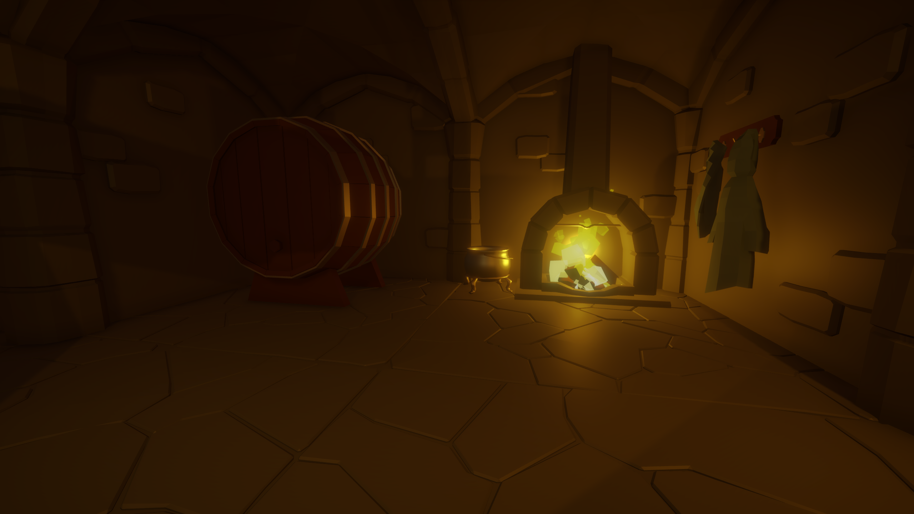
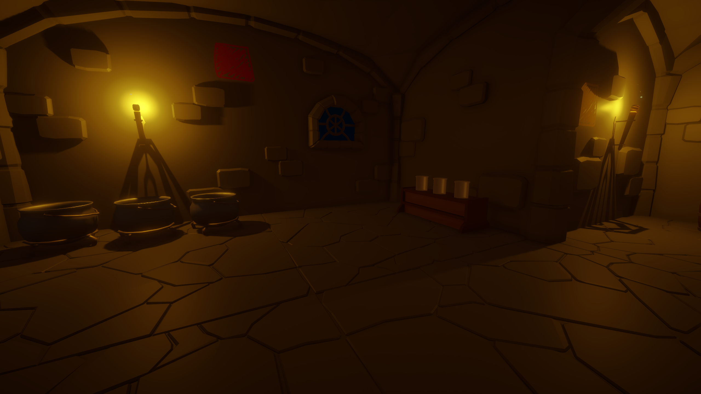
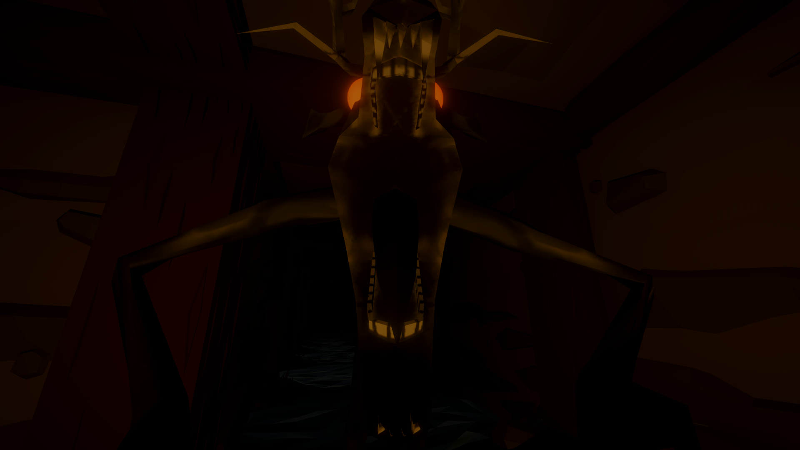
Bullet Blitz
Bullet Blitz is a game that was made in Unity in just one week for the Brackeys Game Jam 2023.1. I worked alongside my teammate Davin Lewis. The theme we worked with was "an end is a new beginning".
This was the first game jam that Davin and I competed in. We weren't really all that sure on what to do, so we decided to try to make a rogue-like sort of game where your stats are randomized each time you play. We would have loved to add more to this idea, however we had very little time and could not even utilize the full week due to school.
The only goal of the game is to survive. You will have different stats everytime you play, and sometimes it will grant you great survivability. As the game continues, the waves will increase and so will the number of enemies. Different enemy types have different attacks, with increasing number of bullets. Before you know it, your screen will be covered in bullets you must avoid.
The game lacks polish and content, but for what it is, it actually is a lot of fun. We did not even have time to add sound unfortunately, but I still look back fondly on this experience. Not to mention it was where we starte, and we have participated in several game jams since.
You can play the game on itch.io here: https://moistmellojello.itch.io/bullet-blitz.
This was the first game jam that Davin and I competed in. We weren't really all that sure on what to do, so we decided to try to make a rogue-like sort of game where your stats are randomized each time you play. We would have loved to add more to this idea, however we had very little time and could not even utilize the full week due to school.
The only goal of the game is to survive. You will have different stats everytime you play, and sometimes it will grant you great survivability. As the game continues, the waves will increase and so will the number of enemies. Different enemy types have different attacks, with increasing number of bullets. Before you know it, your screen will be covered in bullets you must avoid.
The game lacks polish and content, but for what it is, it actually is a lot of fun. We did not even have time to add sound unfortunately, but I still look back fondly on this experience. Not to mention it was where we starte, and we have participated in several game jams since.
You can play the game on itch.io here: https://moistmellojello.itch.io/bullet-blitz.
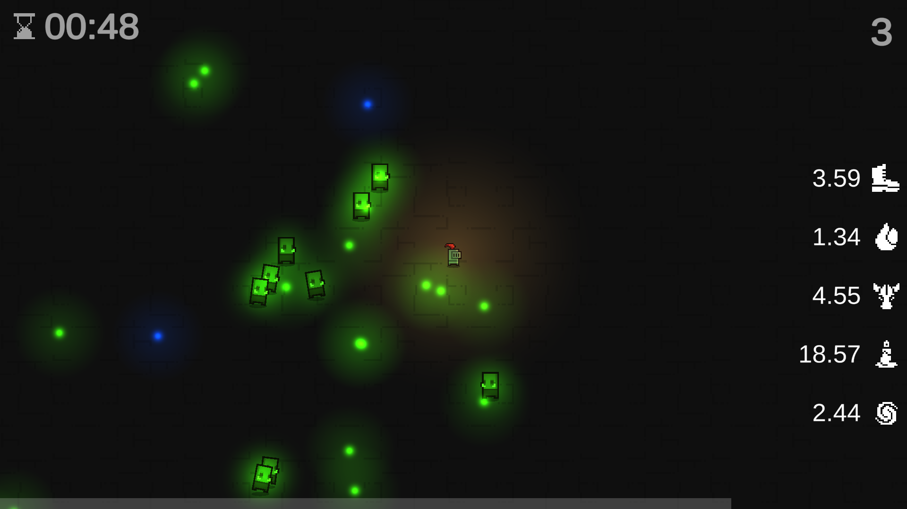
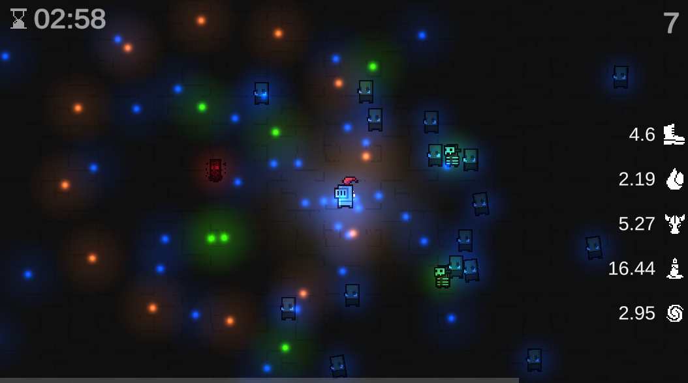
TETRIS
For our CS-151 final project, Davin Lewis and I made TETRIS in C using SFML.
To be completely honest, we were in way over our heads with this project, however we still managed to pull it off. We were still early on in our computer science classes when we took this on, and you can definitely tell from the code alone. The game also runs fairly slowly, but it works.
The game is completely functional, and even has music and saves a high score. It was an amazing feeling to create this game, and is was a big inspiration for me and Davin to start competing in game jams.
To be completely honest, we were in way over our heads with this project, however we still managed to pull it off. We were still early on in our computer science classes when we took this on, and you can definitely tell from the code alone. The game also runs fairly slowly, but it works.
The game is completely functional, and even has music and saves a high score. It was an amazing feeling to create this game, and is was a big inspiration for me and Davin to start competing in game jams.
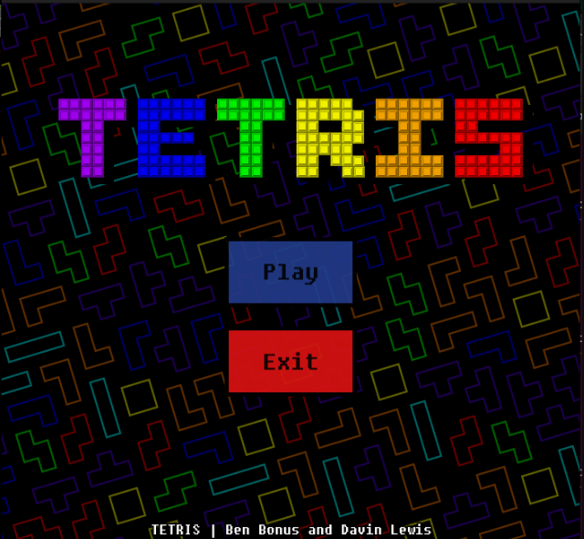

Apps
Piebot
Piebot is a chatbot written in Node.JS for the social platform Discord.
Piebot is my longest running project. It started back in 2019 as one long, ugly file of code, but has grown along with me and my programming knowledge. It has even gone through two entire rewrites of the codebase.
The purpose of Piebot is nothing other than to have silly interactions in a Discord server. Chatbots on Discord, for those unaware, appear very similarly to other users, however they can perform actions based on other users' input. The first iteraction of Piebot had one simple interaction: a randomized response with a number counter everytime the user entered "!pie" in a chat room.
The latest version of Piebot is the most feature-rich. It incorporates a MySQL database in order to store information per-user and create somewhat of an economy system within the discord. Piebot also runs trivia daily, where questions are pulled from The Trivia API and users in the Discord can compete. Piebot even has an equivalent version of the app running on the platform Twitch, where users can interact with Piebot in a live-streamer's chat.
I don't see development for Piebot stopping anytime soon, though development is not constant. Features get added little by little over time.
Piebot is my longest running project. It started back in 2019 as one long, ugly file of code, but has grown along with me and my programming knowledge. It has even gone through two entire rewrites of the codebase.
The purpose of Piebot is nothing other than to have silly interactions in a Discord server. Chatbots on Discord, for those unaware, appear very similarly to other users, however they can perform actions based on other users' input. The first iteraction of Piebot had one simple interaction: a randomized response with a number counter everytime the user entered "!pie" in a chat room.
The latest version of Piebot is the most feature-rich. It incorporates a MySQL database in order to store information per-user and create somewhat of an economy system within the discord. Piebot also runs trivia daily, where questions are pulled from The Trivia API and users in the Discord can compete. Piebot even has an equivalent version of the app running on the platform Twitch, where users can interact with Piebot in a live-streamer's chat.
I don't see development for Piebot stopping anytime soon, though development is not constant. Features get added little by little over time.
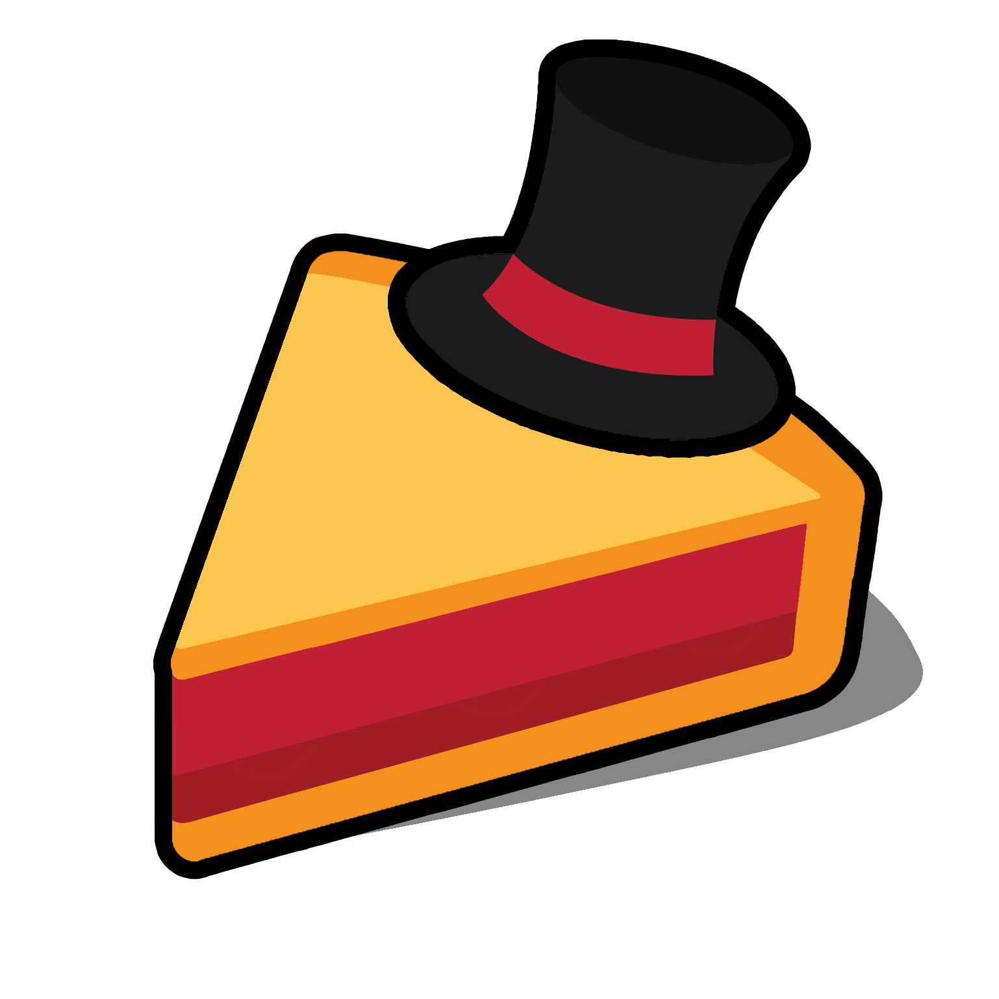
Websites
This website is a portfolio for me, Ben Bonus. I created it entirely by hand using HTML, CSS, and JavaScript. This was a little bit of a passion project, however I also felt that I needed a good way to showcase the projects I have worked on over the years. I had an existing portfolio website that we developed in one of my classes, however that site did not really have any passion behind it and was just for an assignment. For fun, here is the old Portfolio site: https://dappernurd.github.io/Portfolio-Website/index.html. It can also be used to see the amount of progress in projects since I originally made it, back in 2023.
This is a website that I created as a hobby of mine in my free time. The website simply lists out the items collectable in the game Knockout City.
Knockout City was a competitive, third-person dodgeball game. You got put on a team of two or three and fought another team of the same size. It had a very arcadey style, with a futuristic-retro setting. The game was a lot of fun, and I got pretty heavily into it when it was available.
In the game, you could unlock cosmetics as you leveled up. There was a large amount of possible cosmetics to obtain, however there was no official way of seeing everything available. Becauase of this, I took it upon myself to create this website. It was intended to be able to be used for me and anyone else that wanted to look at this information.
It came together really well, and it was very usable. Unfortunately, Knockout City as a live-service game eventually had a dwindling player-base, and as such, went offline.
This was my first major web project, and I am very proud with what it came to be.
You can visit the site here: https://dappernurd.github.io/knockoutcity-catalog/Street%20Rank/help.html
Knockout City was a competitive, third-person dodgeball game. You got put on a team of two or three and fought another team of the same size. It had a very arcadey style, with a futuristic-retro setting. The game was a lot of fun, and I got pretty heavily into it when it was available.
In the game, you could unlock cosmetics as you leveled up. There was a large amount of possible cosmetics to obtain, however there was no official way of seeing everything available. Becauase of this, I took it upon myself to create this website. It was intended to be able to be used for me and anyone else that wanted to look at this information.
It came together really well, and it was very usable. Unfortunately, Knockout City as a live-service game eventually had a dwindling player-base, and as such, went offline.
This was my first major web project, and I am very proud with what it came to be.
You can visit the site here: https://dappernurd.github.io/knockoutcity-catalog/Street%20Rank/help.html
Other
This is a plugin I wrote for Minecraft Java Edition for use on multiplayer servers.
Minecraft is a game that, depending on your playstyle, can be relatively quick to beat. The intention I had when making this plugin was to lengthen that amount of time. It changed several of the main mechanics of the game and even added a few unique features.
This was a small project that did not take very long to create, but it was my first introduction into making a sort of modification to a game like this, and also my first time using Java. I enjoyed seeing other people use it, even though I had originally just made it for myself.
Minecraft is a game that, depending on your playstyle, can be relatively quick to beat. The intention I had when making this plugin was to lengthen that amount of time. It changed several of the main mechanics of the game and even added a few unique features.
This was a small project that did not take very long to create, but it was my first introduction into making a sort of modification to a game like this, and also my first time using Java. I enjoyed seeing other people use it, even though I had originally just made it for myself.
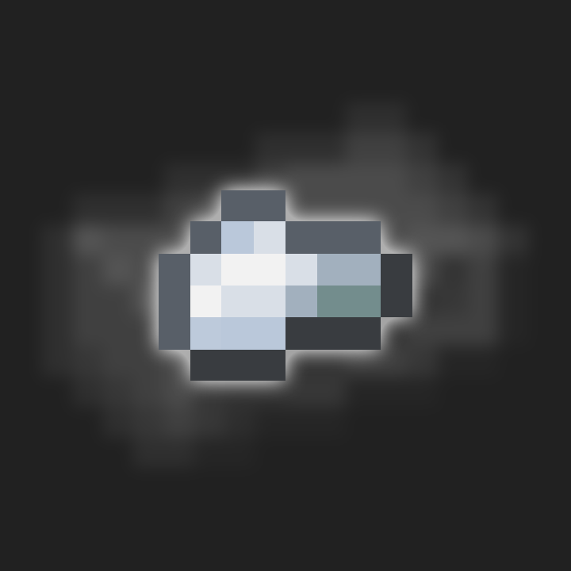
Unfinished
This is possibly one of my most impressive projects, yet it will probably forever remain unfinished. This was a simulation sort of game built in Unity, and was inspired by games like Noita and The Sandbox.
The simulation supports creating some basic elements. The ones I had built was dirt, sand, water, oil, and steam, all with unique properties. It was also a very scalable system. Dirt and sand behaved very similar as two different solids, however they had different levels of structural integrity. Oil was the same as water but was more viscous. Steam was a gas and floated upwards, and would eventually convert back to water.
I am very, very proud of what I achieved with this, even if I never did finish the project. I wrote the simulated physics for each pixel, and mostly just used Unity for the rendering aspect of it. It was surprisingly fun to just go in and draw a bunch of elements around, even if in the prototype there was little to do with them. I had a lot of big plans for this project, but ultimately that is one of the reasons why I decided to scrap it.
Some of the things I had planned for this project was significantly more element types and many more element interactions. I would have liked to make fire an element, and have oil be flammable. I ultimately wanted to be able to create a world that was all built in simulated pixels.
The project was extremely daunting the further I progressed. The more I put into it, the more I realized just how much I would have to put into this project in order to get to a place I wanted to be with it. That realization, along with some struggles I had during development such as liquid not behaving how I wanted it to, is what made me decide to scrap this project. I would love to some day come back to this and remake it, however I just don't have enough free time to commit to something on such a scale.
The simulation supports creating some basic elements. The ones I had built was dirt, sand, water, oil, and steam, all with unique properties. It was also a very scalable system. Dirt and sand behaved very similar as two different solids, however they had different levels of structural integrity. Oil was the same as water but was more viscous. Steam was a gas and floated upwards, and would eventually convert back to water.
I am very, very proud of what I achieved with this, even if I never did finish the project. I wrote the simulated physics for each pixel, and mostly just used Unity for the rendering aspect of it. It was surprisingly fun to just go in and draw a bunch of elements around, even if in the prototype there was little to do with them. I had a lot of big plans for this project, but ultimately that is one of the reasons why I decided to scrap it.
Some of the things I had planned for this project was significantly more element types and many more element interactions. I would have liked to make fire an element, and have oil be flammable. I ultimately wanted to be able to create a world that was all built in simulated pixels.
The project was extremely daunting the further I progressed. The more I put into it, the more I realized just how much I would have to put into this project in order to get to a place I wanted to be with it. That realization, along with some struggles I had during development such as liquid not behaving how I wanted it to, is what made me decide to scrap this project. I would love to some day come back to this and remake it, however I just don't have enough free time to commit to something on such a scale.
This project is unique for me in the sense that it was more of a tool than a game, despite it also being made in Unity.
I was playing Minecraft one day and decided to make a new skin for my character. The tools that I found online were definitely usable, however I felt that they were lacking in some features that would have made it a lot more convenient. This sparked the idea of creating my own custom skin editor.
From what I built with it, you could draw on a 64x64 canvas (the size of a Minecraft skin), and see the result on the model to the right of the canvas. You could also rotate the model, and change the color of the pixels you drew.
The main reason I scrapped this project was because other things came up and I just did not really have the time to keep working on it. I did not get very far with it, however I do think I will come back to it one day and finish it.
In the finished product, I would love to have the ability to draw on different layers, export and import pictures and existing skins, disable and enable certain parts of the model to make viewing better, and more.
I was playing Minecraft one day and decided to make a new skin for my character. The tools that I found online were definitely usable, however I felt that they were lacking in some features that would have made it a lot more convenient. This sparked the idea of creating my own custom skin editor.
From what I built with it, you could draw on a 64x64 canvas (the size of a Minecraft skin), and see the result on the model to the right of the canvas. You could also rotate the model, and change the color of the pixels you drew.
The main reason I scrapped this project was because other things came up and I just did not really have the time to keep working on it. I did not get very far with it, however I do think I will come back to it one day and finish it.
In the finished product, I would love to have the ability to draw on different layers, export and import pictures and existing skins, disable and enable certain parts of the model to make viewing better, and more.
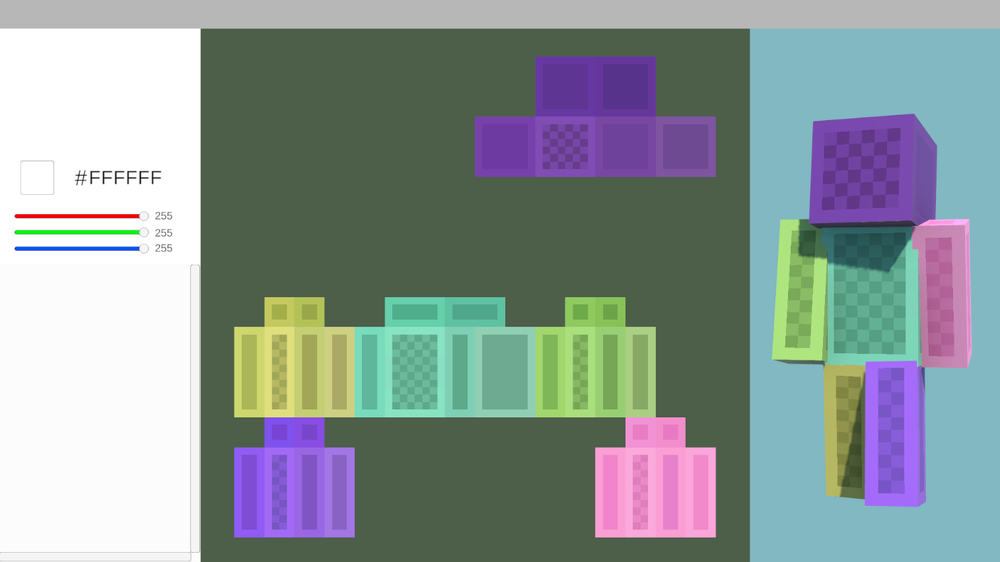
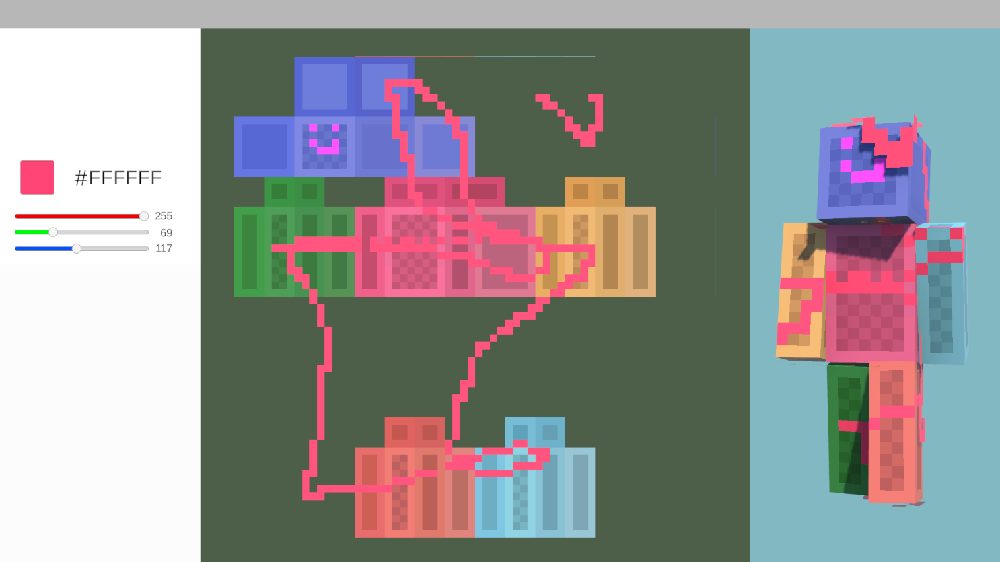